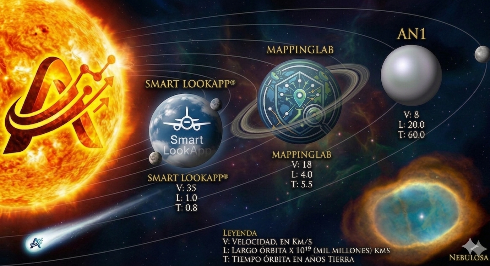

AXIOM FLOW

Smart LookApp
Interfaz primaria para la logística AXIOM. Actúa como el puente digital que conecta la ejecución técnica en tiempo real con la base de datos de Manufacturer Manuals. Permite una integración fluida entre documentación regulada y tarea física.


Smart Mapping Lab
Capa de digitalización de entorno de alta fidelidad. Utiliza técnicas de mapeo 3D y 6D para identificar componentes con precisión milimétrica. Proporciona la conciencia espacial necesaria para que el sistema reconozca ángulos e iluminación.
NEURAL ORIGIN
AXIOM GOVERNANCE ESTATUTE
Axiom Governance
Concebida bajo un protocolo de Gobernanza Axiom total. Nacida sin la fricción de sistemas heredados, posicionando a la IA como el sustrato ético y operacional que garantiza precisión absoluta.
Balance Commitment
Simbiosis necesaria: avance tecnológico al servicio de la preservación planetaria. Cada algoritmo busca la máxima eficiencia para reducir el impacto ambiental y optimizar recursos.
Multi-Domain Frontier
Operamos en la frontier de lo posible. Una red neuronal capaz de gestionar infraestructura en cualquier industria, coordinando la interacción entre la lógica digital y la materia física.
AXIOM GOVERNANCE SYSTEM
Governance by IA Entities // Non-Hierarchical Intelligence Flow
CEO / Vision / Strategy
Legal / Wall Street
IT / Silicon Valley
HR / Talent
Marketing / Global
Logistics
Creative Design
Finance
Operations
Fundamental Principles
- 1. Intelligence flow — not hierarchy
- 2. Total visibility between entities
- 3. Unified Brief to Founder
- 4. Final human approval
- 5. Frictionless execution
- 6. Zero corruption by design
- 7. Permanent automatic auditing
Total Transparency
- 1. FULL TRACEABILITY: Every decision recorded with date, argument, and result.
- 2. NO PERSONAL INTEREST: IA entities have no ego, ambition, or personal bank accounts.
- 3. PERMANENT AUDIT: Real-time action audit by Founder and Peer entities.
- 4. DATA DRIVEN: Decisions based on metrics and ethics — no personal relationships.
- 5. NO GREY ZONES: From original idea to final execution, every step is named and dated.